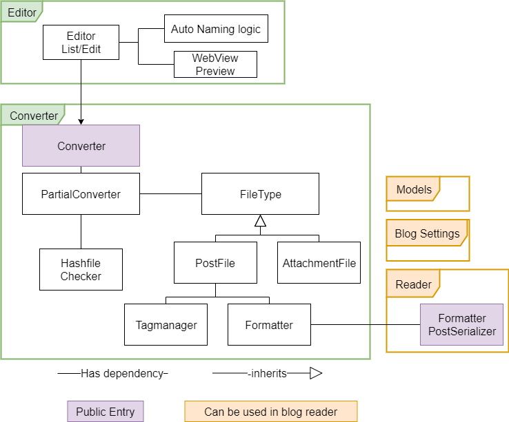
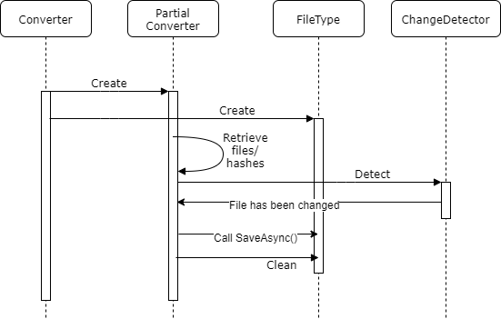

Architecture

This app contains two entry parts - Editor and Conveter. The Converter part is core appliation, and editor gives graphic interfacre for easier markdown edit. Converter works with Windows, Mac, and Linux, but Editor works only on Windows. Currently Editor uses Windows Forms but it will be replaced in somedays.
This creates only JSON file and requires creating own blog to read it.
Editor
Editor provides auto file naming from title and web preview. Editor is not necesasry part, if you understand how to use this app. For example, you can use Visual Studio Code instead of the editor app. This app is easy to use but incomplete.
Converter

Converter is main part of the app. "Converter.Entry" is console app wrapper to converter. Converter compares hash to detect if the file changed, then convert, and finally check the deleted files and clean them.
Each FileType contains file type logic, e.g. from which path it should be, and how to save them. Each file type logic works independently.
Meanwhile, tag and formatter is dependent to only PostFileType, because they only affect to post converting.
Blog Setting
Setting file editing is not supported, so you must edit it manually.
Model, Formatter
These parts can be also used in blog app with blog settings (if you use Blazor).
Models are data to be serialized/deserialized by JSON. About the models, see here.
The formatter (and post serializer) defines how the input format should look like.